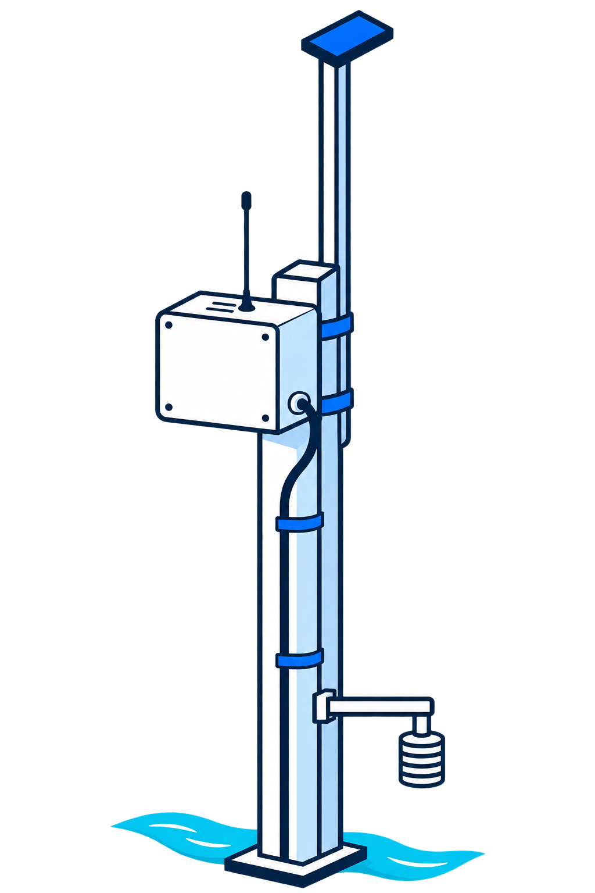

EL PRODUCTO
Equipo e instalación

Estaciones adaptadas
Sensores elegidos según cada problema de monitoreo.
Instalación en campo
El punto de partida para contar con datos del lugar.
Adquisición focalizada
Información que responde a una necesidad concreta.
MODALIDADVenta e instalación